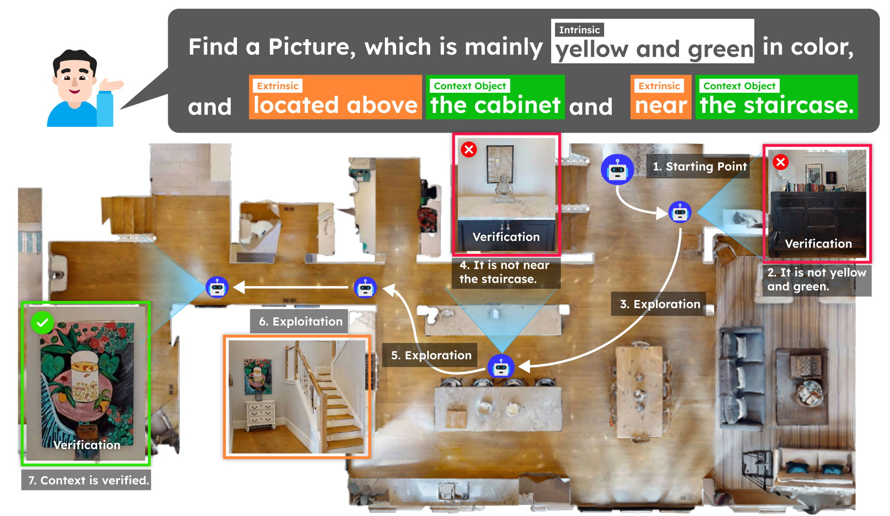
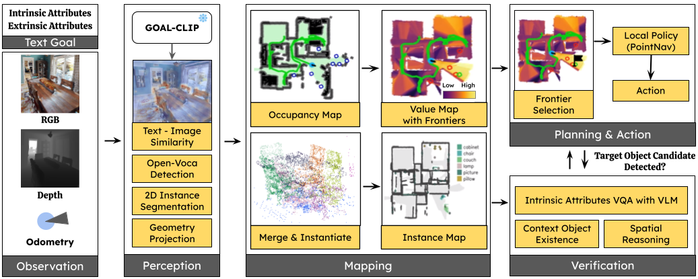
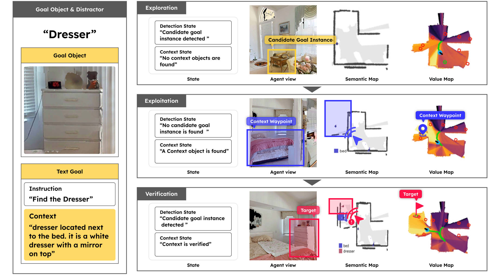
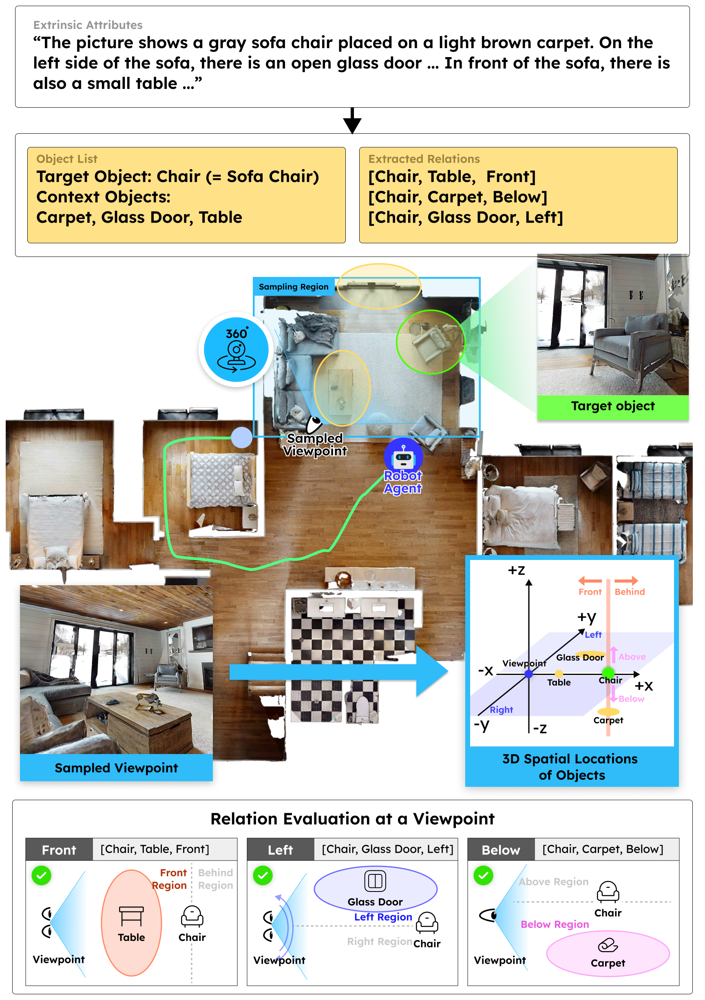
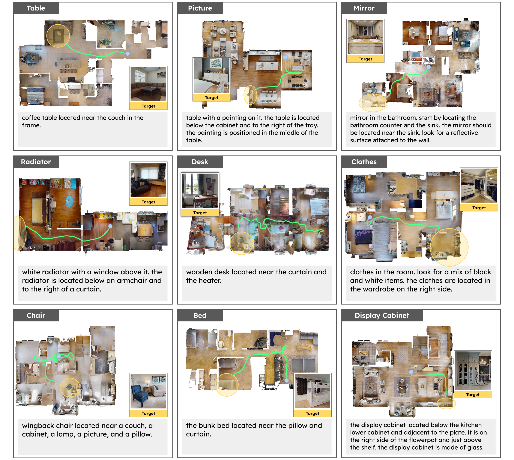

Context-Driven Exploration and Viewpoint-Aware 3D Spatial Reasoning for Instance Navigation
1Department of AI Convergence, GIST *Corresponding Author
Text-goal instance navigation (TGIN) asks an agent to resolve a single, free-form description into actions that reach the correct object instance among same-category distractors. We present Context-Nav, which elevates long, contextual captions from a local matching cue to a global exploration prior and verifies candidates through 3D spatial reasoning.
First, we compute dense text-image alignments for a value map that ranks frontiers—guiding exploration toward regions consistent with the entire description rather than early detections. Second, upon observing a candidate, we perform a viewpoint-aware relation check: the agent samples plausible observer poses, aligns local frames, and accepts a target only if the spatial relations can be satisfied from at least one viewpoint.
The pipeline requires no task-specific training or fine-tuning; we attain state-of-the-art performance on InstanceNav and CoIN-Bench. Ablations show that (i) encoding full captions into the value map avoids wasted motion and (ii) explicit, viewpoint-aware 3D verification prevents semantically plausible but incorrect stops.
Most existing TGIN methods reduce long descriptions to a set of object labels or a structured representation, underutilizing the rich contextual information already present in the description. Context-Nav takes a fundamentally different perspective: spatial reasoning is not merely a verification step but a primary exploration signal. Rather than detecting objects and then checking whether they match the description, the agent explores spaces that are contextually consistent with the entire description, and only commits to an instance after explicit 3D spatial verification. Given a description that mixes intrinsic attributes (e.g., "mainly yellow and green") with extrinsic context (e.g., "located above the cabinet and near the staircase"), the agent explores guided by the context-driven value map and rejects early candidates whose color or nearby context objects do not match, ultimately finding the correct instance where 3D verification confirms all constraints are satisfied.

assets/fig1_overview.pngFigure 1. Overview of the text-goal instance navigation task and our context-driven pipeline.
Context-Nav consists of three tightly integrated stages. Given RGB-D observations, odometry, and a free-form text goal, the perception and mapping modules use GOAL-CLIP, open-vocabulary detection (GroundingDINO + YOLOv7), and 3D projection to build an occupancy map, a context-conditioned value map, and an instance-level map. The context-driven exploration module ranks frontier cells by their value-map scores, guiding the agent toward regions consistent with the entire description rather than committing to early detections. Whenever a target object candidate is detected, the verification module checks intrinsic attributes with a VLM (Qwen2.5-VL 7B) and extrinsic attributes through viewpoint-aware 3D spatial reasoning to decide whether to terminate or continue exploring.

assets/fig2_method.pngFigure 2. Overall pipeline of Context-Nav.
We encode the full text goal with GOAL-CLIP and compute per-pixel text-image similarities, projected into a top-down grid. Frontier cells are ranked by their values, turning long contextual captions into map-level exploration signals.
The agent samples 24 viewpoints at multiple radii, aligns a local reference frame at each pose, and evaluates seven spatial relation predicates. The target is accepted only if all relations are satisfied from at least one viewpoint.
No task-specific training or fine-tuning required. The system leverages pre-trained VLMs (GPT-OSS 20B, Qwen2.5-VL 7B) and geometry-grounded 3D reasoning for zero-shot instance navigation.
In the early exploration phase, the value map highlights regions loosely consistent with the caption; however, the agent does not commit because the context objects (e.g., bed or mirror) are absent—no 3D relation validation can occur yet. As exploration progresses and context instances are detected, the value map sharpens around the corresponding room, making frontier selection more effective. Eventually, a candidate instance satisfying both intrinsic attributes and spatial relations is verified, and the agent stops. The figure below illustrates a typical episode where the agent must find a dresser described as "located next to the bed" and "a white dresser with a mirror on top": the early dresser candidate is not selected because context objects are absent; after the bed is detected, frontier selection focuses on that area; and a dresser that satisfies both intrinsic attributes and 3D spatial relations with the bed and mirror is finally verified as the goal.

assets/fig3_exploration.pngFigure 3. Stage-wise qualitative example of context-driven navigation.
When a candidate target instance is detected and context objects are present, Context-Nav performs viewpoint-aware 3D verification of extrinsic attributes. Starting from the extrinsic part of the goal description, the system extracts context objects and spatial-relation triples (e.g., [Chair, Table, Front]), builds instance-level 3D point clouds, and samples candidate viewpoints around the reference–target pairs at multiple radii (0.8, 1.2, 1.6, 2.0 m) with 24 evenly spaced bearings. For each candidate viewpoint, a local frame is aligned so that the +x axis points from the viewpoint to the reference object, and the seven spatial predicates are evaluated. The target is confirmed only if there exists at least one viewpoint from which all extrinsic relations are satisfied simultaneously.

assets/fig_s1_supp.pngFigure S1. Viewpoint-aware 3D verification of extrinsic attributes.
We evaluate Context-Nav on two complementary TGIN benchmarks within HM3D: InstanceNav (1,000 episodes, 795 unique objects, 6 categories) and CoIN-Bench (Val Seen, Val Seen Synonyms, Val Unseen), which guarantees multiple same-category distractors per episode. Context-Nav achieves state-of-the-art SR among both RL-trained and training-free baselines across all benchmarks.
Benchmark Results on InstanceNav and CoIN-Bench
| Method | Input | TF | InstanceNav | Val Seen | Val Seen Syn. | Val Unseen | ||||
|---|---|---|---|---|---|---|---|---|---|---|
| SR↑ | SPL↑ | SR↑ | SPL↑ | SR↑ | SPL↑ | SR↑ | SPL↑ | |||
| GOAT | d | ✗ | 17.0 | 8.8 | 6.6 | 3.1 | 13.1 | 6.5 | 0.2 | 0.1 |
| PSL | d | ✗ | 26.0 | 10.2 | 8.8 | 3.3 | 8.9 | 2.8 | 4.6 | 1.4 |
| VLFM | c | ✓ | 14.9 | 9.3 | 0.4 | 0.3 | 0.0 | 0.0 | 0.0 | 0.0 |
| AIUTA | c | ✓ | - | - | 7.4 | 2.9 | 14.4 | 8.0 | 6.7 | 2.3 |
| UniGoal | d | ✓ | 20.2 | 11.4 | 2.8 | 2.4 | 3.9 | 3.2 | 2.6 | 2.2 |
| Context-Nav (Ours) | d | ✓ | 26.2 | 9.1 | 13.5 | 6.7 | 20.3 | 10.9 | 11.3 | 5.2 |
Input type c = category-level goal, d = language description. TF = Training-free.
Ablation of Pipeline Components (CoIN-Bench Val Seen Syn.)
| Method | SR ↑ | SPL ↑ |
|---|---|---|
| Nearest frontier exploration | 10.6 | 4.6 |
| Remove VLM category verification | 11.1 | 7.1 |
| Remove attribute verification | 12.5 | 7.7 |
| Remove context verification | 12.0 | 8.4 |
| Full Approach | 20.3 | 10.9 |
The figure below presents successful CoIN-Bench trajectories across nine different target categories (table, picture, mirror, radiator, desk, clothes, chair, bed, display cabinet). The instructions span a wide spectrum of natural language—from purely extrinsic cues to captions that mix intrinsic and extrinsic attributes, and from brief hints to multi-sentence descriptions. Across all cases, Context-Nav converts the full description into a value map prior and enforces 3D spatial consistency, steering the agent toward semantically relevant rooms and furniture groupings rather than chasing isolated detections.

assets/fig4_qualitative.pngFigure 4. Qualitative results across diverse categories and context descriptions on CoIN-Bench.
@inproceedings{jang2026contextnav,
title = {Context-Nav: Context-Driven Exploration and Viewpoint-Aware
3D Spatial Reasoning for Instance Navigation},
author = {Jang, Won Shik and Kim, Ue-Hwan},
booktitle = {Proceedings of the IEEE/CVF Conference on Computer Vision
and Pattern Recognition (CVPR)},
year = {2026}
}